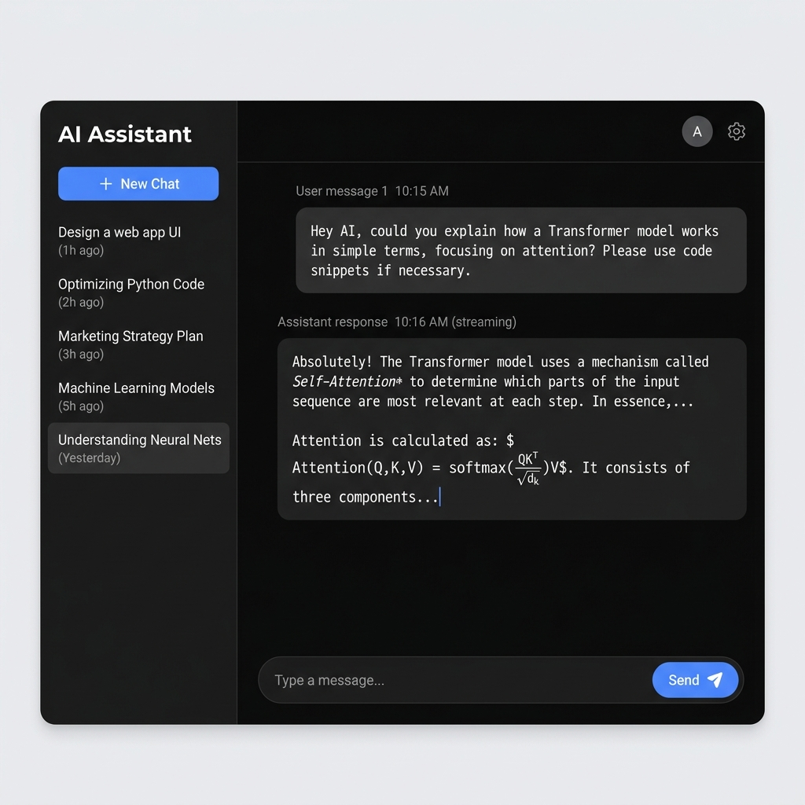
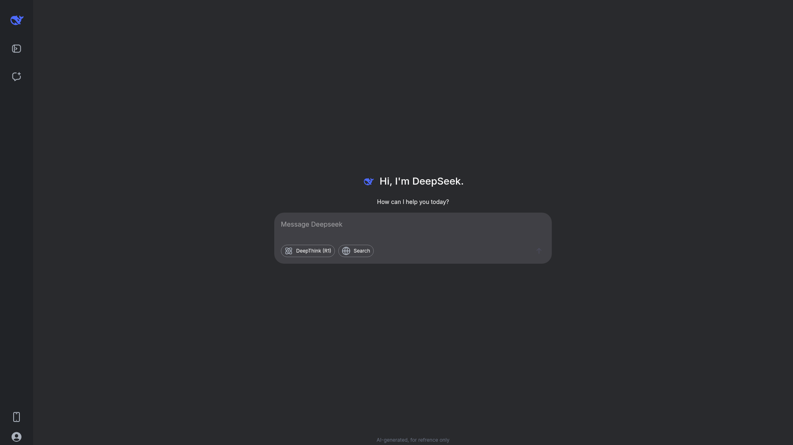

← All work
DeepSeek Chatbot Clone
A ChatGPT-inspired interface connected to the DeepSeek API demonstrating streaming responses and modern chat UX.
deepseek-project-orpin.vercel.app

Overview
A learning-focused rebuild of a ChatGPT-style chat interface wired to the DeepSeek API. The goal was to get comfortable with streaming model output token-by-token and the UX details that make a chat interface feel responsive rather than laggy.
Features
- Streaming responses rendered as they arrive, not after the fact
- Conversation history within a session
- Familiar chat UX patterns — message bubbles, typing state, auto-scroll
Technology stack
Next.js
DeepSeek API
Challenges
- Handling token streaming cleanly on the frontend without janky re-renders
- Managing conversation state so context carried correctly across turns
Gallery
